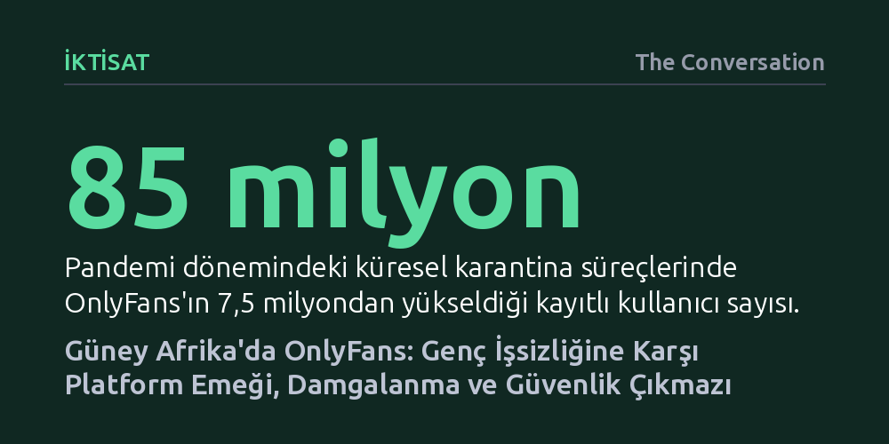

IKTISAT · The Conversation · 2026-09-08
Güney Afrika'da OnlyFans üreticileri, yüksek genç işsizliği ortamında platform emeğiyle gelir elde ederken kendilerini geleneksel seks işçilerinden ayrıştırıyor. Ancak dijital alanda bağımsızlık kazansalar da şantaj, korsan içerik ve yasal koruma eksikliği nedeniyle ciddi güvenlik riskleriyle karşı karşıyalar.
Yetişkin içerik platformlarını ahlaki bir tartışmanın ötesine taşıyarak, krizdeki işgücü piyasalarında gençlerin sığındığı güvencesiz bir platform emeği alanı olarak değerlendirmeyi sağlar.

2016 yılında kurulan OnlyFans, içerik üreticilerinin fotoğraf, video veya canlı yayın karşılığında doğrudan takipçilerinden gelir elde etmesini sağlayan niş bir girişimken kısa sürede küresel bir fenomene dönüştü. Özellikle COVID-19 pandemisi dönemindeki sokağa çıkma kısıtlamaları platformun büyümesini benzersiz bir şekilde hızlandırdı. Fitness eğitmenlerinden müzisyenlere kadar farklı alanlara ev sahipliği yapsa da site, dünya genelinde asıl olarak yetişkinlere yönelik içerik üretimiyle tanınır hale geldi.
Güney Afrika özelinde ise bu dijital genişleme çok daha derin bir sosyoekonomik ihtiyaca karşılık buldu. Dünyanın en yüksek genç işsizlik oranlarından birine sahip olan ülkede, geleneksel işgücü piyasasında yer bulamayan gençler için dijital platformlar esnek ve bağımsız bir gelir kapısı sundu. Yazarın doktora araştırması, OnlyFans platformunu tam da bu ekonomik zorunluluk zemininde, esnek emek (gig economy) modelinin dijital bir uzantısı olarak mercek altına alıyor.
Araştırma kapsamında, Güney Afrika'nın demografik yapısını yansıtacak şekilde çoğunluğu 35 yaşın altındaki siyahi kadınlardan oluşan 17 katılımcıyla derinlemesine görüşmeler yapıldı. Katılımcıların OnlyFans üzerindeki faaliyetlerini ve kendi kimliklerini nasıl tanımladıkları incelendiğinde ortaya çarpıcı bir ikilik çıktı. Bir grup üretici, yaptıkları işi her türlü zevk ve arzu üretimini kapsayan seks işçiliğinin meşru bir parçası olarak sahiplenirken; önemli bir çoğunluk bu etiketi kesin bir dille reddediyordu.
Bu etiketi reddedenler, kendilerini yetişkin içerik üreticisi veya bir tür medya ve performans sanatçısı olarak görüyor. Onlara göre izleyiciyle fiziksel temasın bulunmaması, çalışma saatlerini ve sınırlarını bizzat belirleyebilmeleri, kendilerini sokaktaki seks işçilerinin hayatta kalma mecburiyetinden ahlaken ve mesleki olarak ayırıyor. Sosyolojide sektör içi damgalama olarak adlandırılan bu durum, aynı mecrada çalışanların dahi birbirini yargılayabildiğini gösteriyor. Üreticilerin tamamı gerçek kimliklerini gizlemek, ailelerinden ve çevrelerinden gelebilecek baskıyı göğüslemek adına sahne adları ve çevrim içi alter egolar kullanıyor.
OnlyFans üzerinden gelir elde etmek yalnızca kamera karşısına geçmekten ibaret değil; arka planda yoğun ve disiplinli bir dijital emek süreci barındırıyor. İçerik üreticileri sosyal medya algoritmalarıyla sürekli mücadele ederek kitle edinmek, mesaj ve özel talepleri yönetmek, iş birlikçilerle ilişkileri yürütmek ve kimliklerinin ifşa edilme riskini kesintisiz olarak yönetmek zorunda kalıyor. Bu yönüyle araştırma, meselenin salt ahlaki bir tartışmaya indirgenmesini aşarak dijital cinsel alanlardaki üretimin gerçek bir platform emeği olduğunu ortaya koyuyor.
Bu emeğin yürütüldüğü hukuki zemin ise Güney Afrika'da dikkat çekici bir tezat barındırıyor. Ülkede fiziksel seks işçiliği teknik olarak halen suç kapsamında yer alırken, 1996 tarihli Filmler ve Yayınlar Yasası yetişkinlere yönelik görsel-işitsel içeriklerin üretimini ve dağıtımını yasal kılıyor. Böylece OnlyFans gibi platformlar bütünüyle yasal olarak faaliyet gösterebilirken, bu alandaki emeğin meşruiyeti ile geleneksel seks işçiliğinin yasa dışı konumu arasındaki çizgi giderek bulanıklaşıyor.
Platform üreticilere orta vadeli finansal bağımsızlık ve bedenleri üzerinde denetim alanı açsa da çalışma ortamı ciddi mesleki tehlikeler barındırıyor. Fotoğraflara filigran eklenmesine rağmen üretilen içerikler sıklıkla çalınarak Telegram ve WhatsApp gibi kanallarda korsan yollarla dağıtılıyor. Dahası, üreticiler çalınan bu görüntülerin ailelerine veya arkadaş çevrelerine sızdırılması tehdidiyle siber şantaja ve zorbalığa maruz kalıyor.
Buna karşın araştırmaya katılan üreticilerin hiçbiri, toplumsal damgalanma ve yargılanma korkusu nedeniyle polise ya da hukuki mercilere başvuramadığını belirtiyor. Bu güvensizlik ortamı, içerik üreticilerinin iş sağlığı ve güvenliğini derinden zedeliyor. Çalışmanın vardığı temel sonuç, dijital cinsel alanların daha güvenli hale getirilmesi için seks işçiliğinin suç olmaktan çıkarılarak yasal güvenceye kavuşturulması ve kapsamlı dijital okuryazarlık politikalarının hayata geçirilmesi gerektiğidir.